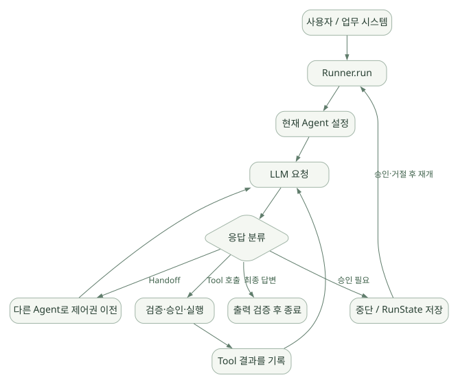

큰 그림 / 단원 01
API와 SDK의 역할부터 나누기
개발자가 선언하는 것과 Runtime이 수행하는 것
먼저 연결해 보기
모델 API는 응답을 제공하지만 도구를 찾아 실행하고 결과를 다시 입력하는 반복은 별도 실행 구조가 필요합니다. SDK는 이 반복을 관리하는 기반을 제공하며 업무 정책과 데이터 접근 코드는 개발자가 작성합니다.
먼저 Agent가 독립 프로세스가 아닌 구성 객체라는 점을 잡고 최소 예제를 읽으세요. 코드가 짧다는 사실과 실제 서비스의 정확성·보안·운영 준비가 끝났다는 사실은 다릅니다.
읽는 관점Agent 생성, 모델 응답 생성, Python Tool 실행의 시점과 주체를 각각 구분하세요.
1. 10분 핵심 요약#
1.1 한 문장 정의#
OpenAI Agents SDK는 LLM을 도구와 연결하고, 반복 실행(Agent Loop), 에이전트 간 위임, 입출력 검증, 세션 및 실행 추적을 Python 코드로 구성할 수 있는 경량 Agent 개발 SDK다. 공식: [S01], [S02]
이는 완성된 범용 AI 비서라기보다 개발자가 업무용 에이전트를 만들 때 이용하는 런타임과 추상화 묶음에 가깝다. 기본적으로 모델의 다음 행동 선택과 SDK의 실행·상태 관리가 결합된다.
1.2 도식으로 먼저 이해#
넓은 도식은 가로로 이동하며 읽을 수 있습니다. 도식 크게 보기 ↗

원문에 수록된 학습용 도식입니다. 노드·화살표·분기 라벨을 보존해 다시 배치했습니다. 세부 조건과 예시·구현의 구분은 앞뒤 본문을 함께 읽으세요.
도식 원문 보기 (Mermaid)
flowchart TD
U[사용자 / 업무 시스템] --> R[Runner.run]
R --> A[현재 Agent 설정]
A --> M[LLM 요청]
M --> D{응답 분류}
D -->|최종 답변| G[출력 검증 후 종료]
D -->|Tool 호출| T[검증·승인·실행]
T --> H[Tool 결과를 기록]
H --> M
D -->|Handoff| A2[다른 Agent로 제어권 이전]
A2 --> M
D -->|승인 필요| P[중단 / RunState 저장]
P -->|승인·거절 후 재개| R쉬운 비유: 모델은 다음 작업을 제안하는 분석가, Runner는 작업 순서를 진행하는 운영자, Tool은 데이터베이스·Python·사내 API 같은 실무 도구, Guardrail은 각 경계의 검사, Session은 대화 이력 저장, Trace는 어떤 일이 일어났는지 남기는 실행 기록이다.
1.3 가장 중요한 오해 여섯 가지#
- Agents SDK ≠ OpenAI API 자체. Responses API는 모델 응답을 제공하고, SDK는 반복 호출과 도구 실행을 관리한다.
- Agent ≠ 독립 프로세스. 통상
Agent는 지침·모델·도구·출력형 등을 묶은 구성 객체이며 실행은Runner가 담당한다. - Handoff ≠ 단순 함수 호출. Handoff는 현재 대화의 제어권을 다른 Agent로 옮긴다.
Agent.as_tool()은 담당 Agent가 하위 작업 결과를 받아 다시 판단하는 방식이다. - Session ≠ RAG/지식베이스. 기본 Session은 대화 이력의 지속성 기능이며, 공정 문서·설비 로그의 의미 검색은 별도 데이터 접근 로직이 필요하다.
- Guardrail ≠ 완벽한 보안 장치. 특히 기본 병렬 입력 Guardrail은 검사 완료 전에 Agent 작업이 일부 수행될 수 있다. 권한 검사는 도구·DB·인프라 수준에서 강제해야 한다.
- Structured Output ≠ 참인 내용. JSON 형식이 맞더라도 잘못된 수율, 근거 없는 결함 원인, 잘못된 SQL 분석은 발생할 수 있다.
1.4 학습 완료 시 답할 수 있어야 할 질문#
Runner.run()의 입력이 모델로 전달되고 결과가 돌아오는 경로는?- 모델이 어떤 조건에서 종료 / Tool 실행 / Handoff / 승인 대기를 결정하고 SDK가 이를 해석하는가?
- Python 함수가 어떻게 JSON Schema가 있는 도구가 되고, 인자 검증과 실제 호출은 어디서 일어나는가?
context,session,RunState, RAG 저장소는 각각 무엇이 다른가?- 민감한 공정 데이터로 Agent를 만들 때 SDK 외에 어떤 보안·운영 로직을 추가해야 하는가?
2. 용어부터 구분: API와 SDK, Framework와 Harness#
| 개념 | 무엇을 제공하나? | 누가 제어하나? | OpenAI 예시 |
|---|---|---|---|
| LLM/모델 | 다음 토큰 및 도구 호출 요청 등 생성 | 모델 제공사/호스팅 | 지원 모델 |
| 모델 API | 모델 요청·응답 인터페이스 | 개발자의 API 호출 코드 | Responses API |
| Agent SDK | 실행 루프·도구·다중 에이전트·가드레일 | SDK 런타임과 개발자 | OpenAI Agents SDK |
| Agent Framework | Agent를 구성하는 추상화와 구조 | 프레임워크/개발자 | 넓은 의미에서 SDK도 해당 |
| Agent Harness | 지속 실행에 필요한 환경·권한·도구·컨텍스트 등의 묶음 | 제품마다 다름 | Sandbox Agent 같은 확장 기능 |
| 서비스 플랫폼 | 저장소·인증·배포·모니터링까지 포함 | 앱/클라우드/운영자 | 앱 운영 아키텍처에서 별도 구성 |
Responses API를 직접 사용할 때는 모델 응답의 Tool 호출을 찾아 함수를 실행하고 결과를 다음 요청에 붙여 다시 호출하는 로직을 개발자가 구현할 수 있다. Agents SDK를 사용하면 기본 반복 실행과 Handoff·Session 등의 관리가 제공된다. 대신 세밀한 제어가 필요한 구간에서는 SDK의 설계와 확장 지점을 이해해야 한다. [S01], [S03]
SDK는 pip install openai-agents로 사용하는 Python 라이브러리이지, 반드시 특정 웹 UI를 이용해야 하는 플랫폼은 아니다. 기본적인 OpenAI 모델 연결에는 OpenAI API 인증·과금 등이 별도로 필요하다.
3. 설계 철학, 범위, 발전 방향#
3.1 핵심 철학#
공식 소개는 작고 적은 추상화만으로 시작하면서, 필요한 곳은 사용자 정의로 확장한다는 방향을 강조한다. 주요 축은 Agent, Tool, Handoff/Agent-as-Tool, Guardrail이다. Tracing, Session, Human-in-the-loop가 실무 기능을 보강한다. 이전의 실험적 프로젝트 Swarm에서 발전한 생산 지향 SDK라는 설명도 공식 문서에 있다. [S01]
3.2 무엇을 SDK에 맡기고 무엇을 직접 관리하는가?#
| SDK에서 다루는 기능 | 애플리케이션이 여전히 책임지는 기능 |
|---|---|
| 모델 호출과 기본 실행 반복 | 문제 정의, 업무 단계, 요구 정확도 |
| Python Function Tool 등록 및 스키마 검증 | 실제 SQL/API/Python 실행 코드, 권한·검증 |
| Handoff·Agent-as-Tool 연결 | 업무별 역할 분리의 타당성, 데이터 공유 정책 |
| Session 인터페이스와 구현 | 사용자 인증, 테넌트별 데이터 격리, 보존 정책 |
| Guardrail 실행·Tripwire | 최종 정책과 결정적 검증 규칙의 작성 |
| Trace 계측 | 민감 정보 반출 정책, 관측 저장·접근 통제 |
| RunState로 중단/재개 | 승인 권한, 스냅샷 무결성, 외부 효과의 멱등성 |
| 일부 Sandbox·Skills·Memory 기능 | 호스트별 신뢰 경계, 파일 접근 통제, 데이터 거버넌스 |
주의: 2026년 10월 기준 Python SDK에는 Sandbox Agent, 샌드박스 메모리·Skills 등 확장 기능도 존재한다. 따라서 구버전의 설명처럼 'SDK에는 Skills나 장기 기억 기능이 전혀 없다'고 단정하면 안 된다. 기본 일반 Agent 경로와 Sandbox 확장 기능을 나눠서 평가해야 한다. [S01], [S23]
4. 개발 환경과 첫 예제#
4.1 준비#
# 문서 기준 SDK 버전 고정(실제로 설치한다면)
python -m venv .venv
# macOS/Linux: source .venv/bin/activate
# Windows PowerShell: .venv\Scripts\Activate.ps1
python -m pip install "openai-agents==0.24.0"
# OpenAI API 연결 시 환경변수 별도 설정
# Bash: export OPENAI_API_KEY="..."
# PowerShell: $env:OPENAI_API_KEY="..."API 키는 소스코드·Git·학습 문서에 넣지 않는다. 본 문서는 설치·실행을 수행하지 않았다. Python 지원 버전과 추가 패키지는 릴리스의
pyproject.toml및 공식 설치 문서를 확인하자. [S01], [S26]
4.2 가장 단순한 실행#
from agents import Agent, Runner
agent = Agent(
name="SemiconductorTutor",
instructions="반도체 개념을 정확하고 이해하기 쉽게 설명한다.",
)
result = Runner.run_sync(agent, "DRAM과 SRAM의 차이를 설명해줘.")
print(result.final_output)Agent생성은 그 자체로 모델을 호출하는 작업이 아니다.Runner.run_sync는 동기 진입점이며, 비동기 서버 환경에서는 일반적으로await Runner.run(...)를 사용한다.- 모델 지정이 없을 때 SDK·환경에 의존한 기본값이 적용될 수 있으므로 실제 프로젝트에서는 모델을 명시하고 버전을 고정한다.
4.3 첫 번째 Function Tool#
from agents import Agent, Runner, function_tool
@function_tool
def lookup_process_definition(term: str) -> str:
"""공정 용어의 검증된 정의를 조회한다."""
glossary = {
"etch": "식각: 원하는 형상을 만들기 위해 물질을 제거하는 공정",
"deposition": "증착: 기판 위에 박막을 형성하는 공정",
}
return glossary.get(term.lower(), "등록된 용어 없음")
agent = Agent(
name="ProcessTutor",
instructions="용어가 필요할 때 제공된 도구로 먼저 확인하라.",
tools=[lookup_process_definition],
)
result = Runner.run_sync(agent, "etch의 의미가 뭐야?")
print(result.final_output)실행 원리: 데코레이터가 함수 시그니처·문서 문자열로 도구의 메타데이터와 입력 스키마를 생성한다. 모델은 도구 호출 요청을 생성할 수 있고, 실제 로컬 Python 함수 실행은 SDK 런타임이 한다. 모델에 DB 비밀번호를 제공할 필요가 없다. [S04]